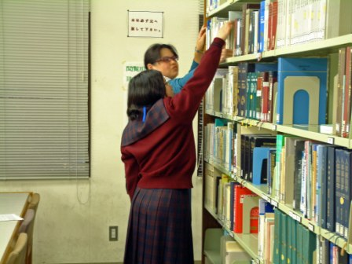

理大図書館職場体験（就実中学校編）
平成19年10月30日(火)〜11月1日(木)(３日間)
今回は、就実中学校から｢職場体験活動｣の依頼があり、平成19年10月30日(火)〜11月1日(木)の３日間9:00〜16:00、2年生2名を対象とした図書館業務体験及び見学を実施しました。１日目は、１１号館・２１号館・１０号館図書館見学、ＯＰＡＣ実習、貸出・返却業務実習、図書館HP・情報検索を行いました。２日目は、図書発注業務、図書受入業務、図書分類・目録、装備実習を行いました。３日目は、書架整理実習、２回目の貸出・返却業務実習、雑誌受入業務実習、ILL業務(依頼・受付)を行いました。
３日間の職場体験ということで、各業務の説明、実習に時間的余裕があり、図書館の殆どの業務を体験することができました。
◆見学◆
理大図書館は、11号館図書館、21号館図書館、10号館図書館の３館で運用しているため、見学は３館全て行いました。職場体験を行う11号館図書館では、蔵書数の多さや電動書架に驚かれていました。21号館図書館では、シーボルト旧蔵日本植物図譜コレクションを閲覧しました。10号館図書館では、文庫本に親しみを感じられ、職場体験期間中に本を借りたかったようでした。
◆ＯＰＡＣ◆
パソコンの操作には慣れているようでしたので、自宅からも色々と検索できるよう検索画面についても説明をしました。 そして、用意していた例題の図書を探すために、入力の仕方、書誌・所蔵の見方等を説明し、実際に図書を見つけに行きました。
◆貸出・返却(1回目)◆
午後から１時間程、貸出・返却の業務体験を行いました。理科大学図書館での貸出・返却の手順を一通りレクチャーした後、実際に業務を行ってもらいました。ただ、学生の授業時間に当たったためか、実際には、それぞれ１・２回程しか貸出・返却を体験してもらえなかったのが残念です。
最後に、ブックトラックに乗せておいた返却本を書架に戻してもらって終了となりました。
◆図書館HP・情報検索◆
図書館HPの説明の後、国立国会図書館「雑誌記事索引」を検索、「聞蔵DNA for Libraries」で朝日新聞記事を検索しました。また、「理科年表プレミアム」を使用して、動物の寿命や、岡山県の人口と面積を調べてみました。その後、自由に色々な検索語を入力して実習してみました。
PCにかなり慣れているようで、キーボードを打つのが早いのに感心しました。
◆図書発注◆
毎日、日本は元より世界中で膨大な図書が発行されています。その中から、大学生に必要な本をどのように選書していくかを実習を兼ねて説明しました。
一見難しくみえることも、検索及び発注ツールを使い、ＮＤＣやＩＳＢNを駆使すれば、簡単かつ誤り無く、選定・発注業務が行えることがお分かりいただけたことと思います。
◆図書受入◆
図書受入業務の全般的な流れを説明した後、PCで発注リストの作成→ブックトラックに発注リストの順番に並べるのを体験→PCで受入登録→PCでIDの採番→PCで支払書類の作成を行いました。PCでの業務も少し体験してもらいました。
◆図書分類・目録◆
分類を中心に説明しました。
例えば、何万、何十万の人がごちゃごちゃと居る中から一人を探すのは大変です。同じように、図書館にも何万、何十万冊の図書が置いてあります。でも、図書館の本って冊数の割には探しやすいと思いませんか？
それは、図書の内容によって分けるとっておきの方法があるからです。ここでは、実際に図書を分けてもらいながら、その仕組みを覚えていただきました。
◆装 備◆
職員が装備する予定の図書があったので、実際に装備をしてもらいました。 バーコードラベルと蔵書ラベルをバーコードプリンターで打ち出し、そのラベルと返却期限票、ブックポケットを規定の位置に貼り、小口印を押しました。 最後に背ラベルを印刷して貼り、フィルマーをかけました。 装備が終わった図書を、書架に行って配架するところまでを体験してもらいました。真剣に作業している姿が印象的でした。
◆書架整理◆
図書館の図書は、NDCの分類番号+著者記号順に書架に規則正しく配置されています。いくら高度なコンピュータ情報検索機能を有していても、図書の配置が不十分では、目的の図書を探し出すことはできません。図書館では、定期的な書架整理が必要不可欠な重要な業務となっています。今回は、以上の内容を説明理解頂いて、実際の書架整理業務体験をしてもらいました。

理大図書館では、書棚に、その棚に置くべき図書の請求記号の掲示をマグネットで貼ってあります。マグネットでの掲示なので、掲示の移動がしやすくなっています。図書を該当する棚に戻すための工夫です。
◆貸出・返却(２回目)◆
１日目で貸出・返却の実習を行っているので、２回目の実習では、１回目の実習を踏まえて、図書に貼られているバーコードを読み込んで貸出・返却処理、視聴覚資料の閲覧処理、返却された図書を書架に配架する作業等を行いました。２回目なので、少し業務に慣れた様子で、カウンター業務に取り組んでいました。
 ◆雑誌受入◆
◆雑誌受入◆
雑誌についての全般的な説明と受入業務の詳細を聞いてもらった後、納品チェック → 資料IDシール印刷 → PCでの受入データの登録と資料IDシール・利用度調査票シールの装備を実際に行ってもらいました。
洋雑誌・和雑誌を合わせて一人10冊ずつ受入処理を実行してもらいました。
例えば、 Advances in mathematics Vol.216 No.1 や Nature Vol.449 No.7165 は、今回データ登録してもらったものです。
◆ILL依頼◆
業務体験最後の項目のＩＬＬ（相互貸借）です。最初にＩＬＬという仕事についての説明をした後、パソコンを使って、一人１件ずつ実際に文献複写依頼をしてもらいました。依頼してもらった文献は、無事に届いていますので、安心してください。
◆ILL受付◆
他大学等からの依頼が来てからの流れに沿って、実際に、受付簿記入→依頼文献調査→該当文献複写→発送内容確認→封筒に入れる発送準備までしました。
今回は、紙による複写だけでなく、電子送信もしてみました。
 ◆｢職場体験活動の記録｣まとめ◆
◆｢職場体験活動の記録｣まとめ◆
館長室で「職場体験活動の記録」のまとめをしました。３日間楽しく色々な業務を体験できました。
たくさんの業務を頑張って体験した達成感が笑顔に表れていてキュートでした。
◆「『図書館利用案内』掲載イラスト展2007｣の前で◆
読書週間に併せて、10月29日〜11月9日まで開催中の「『図書館利用案内』掲載イラスト展2007｣の前で、最後に記念撮影をしました。今度は、理大図書館の利用者として来館して下さいね。
- 業務体験についての感想
★楽しくて素敵な体験をさせて頂きました。
★とても楽しかったです。少し疲れましたが、とても満足しています。
- 見学についての感想
★色々なものや本を見られて、とても良かったですし、幸せでした。
|